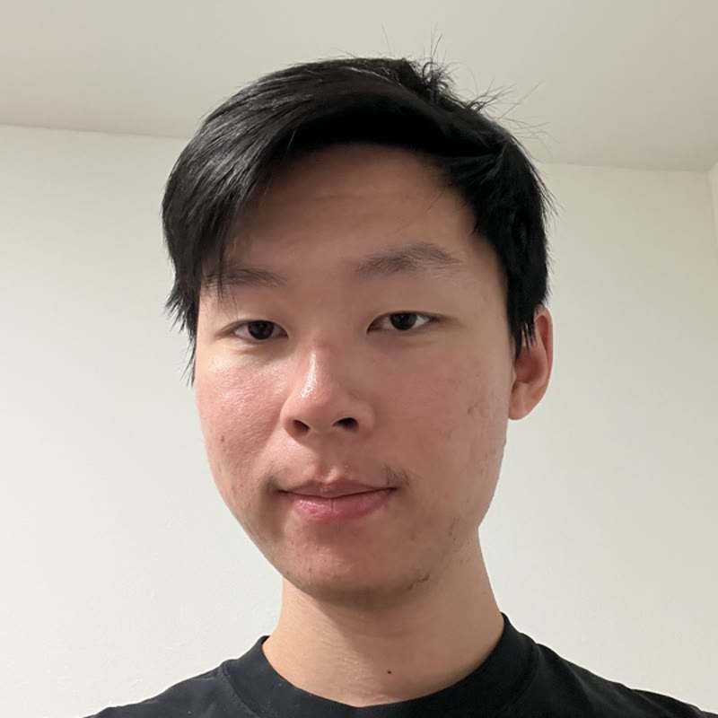

Jimmy Wang
PhD student at UC Berkeley
Hi! I am a PhD student at UC Berkeley supported by the NSF GRFP. Previously I was a research associate at Columbia University, working on problems in robotics and 3D vision with Yunzhu Li, Richard Zemel, and Aleksander Holynski.
I received a BA in mathematics from Columbia, where I was advised by Richard Zemel, Hongseok Namkoong, and Daniel Jiang.
Publications and Preprints
Hybrid Particle-Voxel Dynamics for Multimodal 3D World Simulation
Unsupervised Confidence Calibration for Reasoning LLMs from a Single Generation
ICML Workshop on Agentic Uncertainty Quantification
Adaptive Elicitation of Latent Information Using Natural Language
ICML 2025
Best Paper, ICLR 2025 Workshop on Quantifying Uncertainty and Hallucination in Foundation Models
Optimization-Driven Adaptive Experimentation
Oral Presentation, ESIF Economics and AI+ML Meeting 2024
AExGym: Benchmarks and Environments for Adaptive Experimentation
Oral Presentation, Conference on Digital Experimentation 2024